start-helper.cmd 后点网页上的「一键批改」，网页会自动把提交同步成
app/data/pending_submissions.json，AI 就能读到。
github.com/ZhikHuang/kaoyan_English_essay_tutorD:\kaoyan-english-writingapp\、skill\、tools\、一键批改.cmd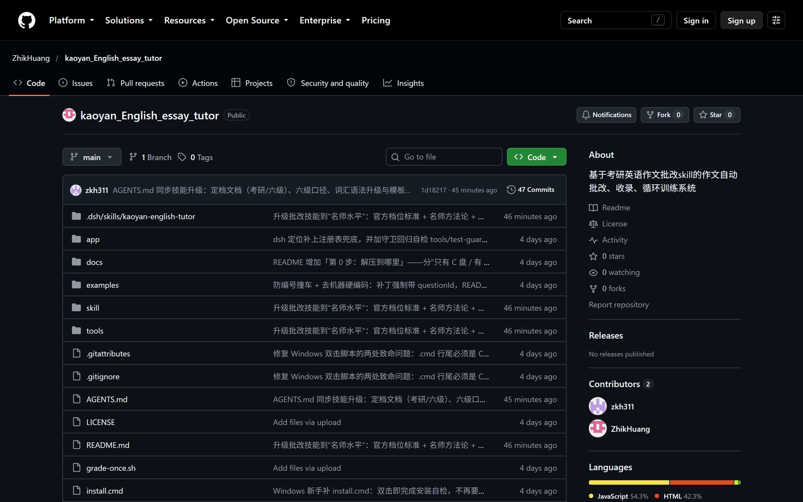
① ②main 分支的最新版。kaoyan_English_essay_tutor，别下成别人的 fork；文件列表里应能看到 app / skill / tools 三个目录。C:\Program Files\（需要管理员权限，写补丁会被拒）；
不要放 OneDrive / 坚果云等同步目录（会锁文件、回滚版本）；不要直接在压缩包里双击运行（只读临时目录，写不进数据）。
正确做法：先解压到普通磁盘目录，再双击里面的文件。
| 文件 / 文件夹 | 作用 | 要不要动 |
|---|---|---|
app\index.html | 练习台本体：双击它就打开网页 | 经常用 |
app\data\ | 题库、你的提交、批改结果（都在这里） | 别手改 |
一键批改.cmd | 双击 = 让 AI 批改所有待批改作文 | 经常用 |
start-helper.cmd | 常驻服务，让网页出现「一键批改」按钮 | 可选 |
skill\ | 批改标准（AI 读的提示词）：官方档位、词汇语法库、模板库 | 可查阅 |
tools\ | 自检脚本（validate / check-repo / check-skill） | 排错用 |
docs\ | 本手册、安装说明 | 可查阅 |
双击 app\index.html（建议用 Edge 或 Chrome）。打开后第一眼看到的就是「总览」页（图 2）。
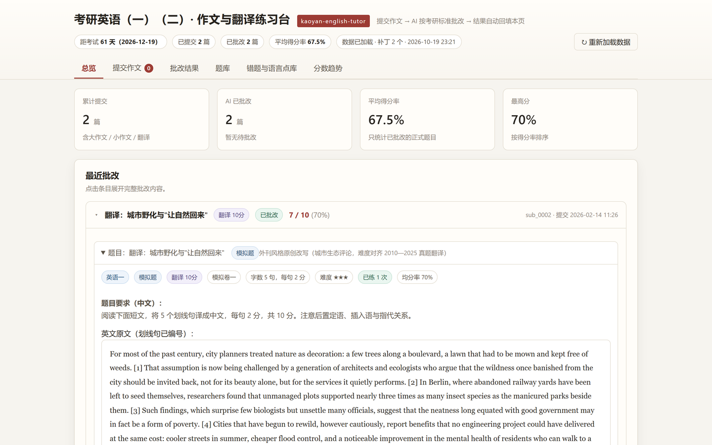
① ② ③ ④ ⑤app\data\state.js 的 examDate，可以对 AI 说「把考试日期改成 2026-12-19」。index.html 与 data\ 是否在同一层（app\ 目录被移动过就会这样）。
点顶部「题库」。题库支持三级筛选：科目（英语一 / 英语二）→ 类别（考研真题 / 模拟题 / 我的题目）→ 题型（大作文 / 小作文 / 翻译 / 长难句）。
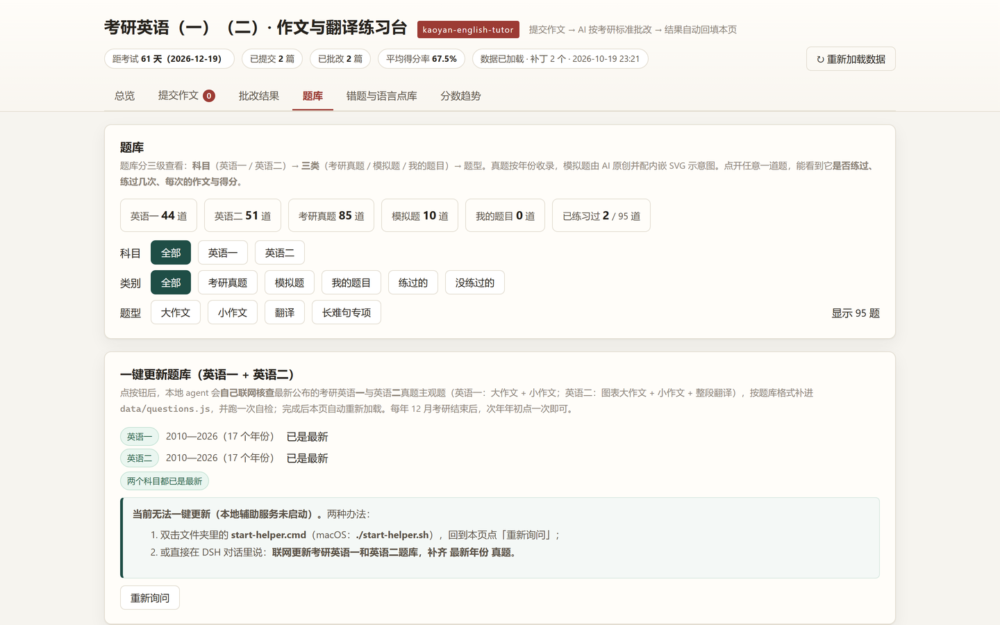
① ② ③ ④点任意题目条目即可展开（图 4）。真题的图画/图表都是本站自绘的 SVG 示意图，不是原卷图片，用于说明画面内容。
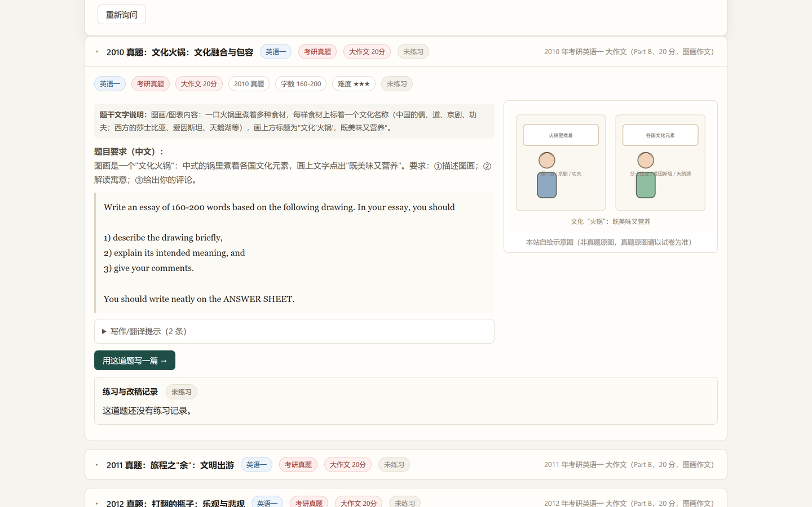
点顶部「提交作文」，按图 5 从上到下填完即可。
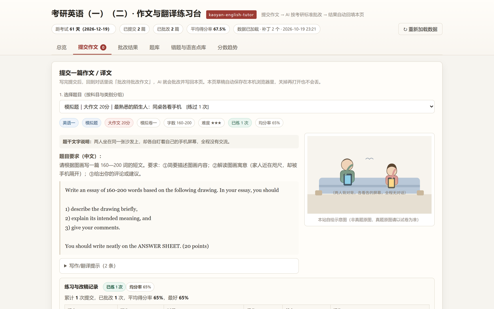
| 区域 | 怎么填 |
|---|---|
| 1. 选题目 | 下拉按科目分组（英语一 / 英语二），已练过的题会标 [练过 N 次]。选错题会导致批改口径全错，务必先确认。 |
| 2. 作文正文 | 直接粘贴英文原文。手写稿可以跳过正文，用「3. 手写照片」交同一次作文的另一种形式（照片会导出到 data\uploads\，你在对话里告诉我路径即可转录）。 |
| 3. 附加要求 | 可选。例如「重点看时态」「讲细一点」「这是六级作文」。 |
| 4. 与上一篇的关系 | 这是同一篇作文的修改稿时，选上一稿，之后可以并排对比「哪些问题改好了」。 |
| 5. 提交 | 点「提交，等待 AI 批改」。右侧会显示即将分配的编号（如 sub_0003）。 |
| 6. 提交之后 | 记住这句指令：批改待批改作文。下面 §4 讲怎么把它交给 AI。 |
| 方式 | 怎么做 | 适合 |
|---|---|---|
| A. 网页按钮 | 双击 start-helper.cmd → 回到网页「提交作文」页最下方 → 点「一键批改（N 篇）」 | 连着练好几篇，最省事 |
| B. 一键批改.cmd | 双击仓库根目录的 一键批改.cmd，等窗口跑完（1—5 分钟） | 不想开常驻服务 |
| C. 直接在对话里说 | 对 AI 说：批改待批改作文 | 想顺手追问细节 |
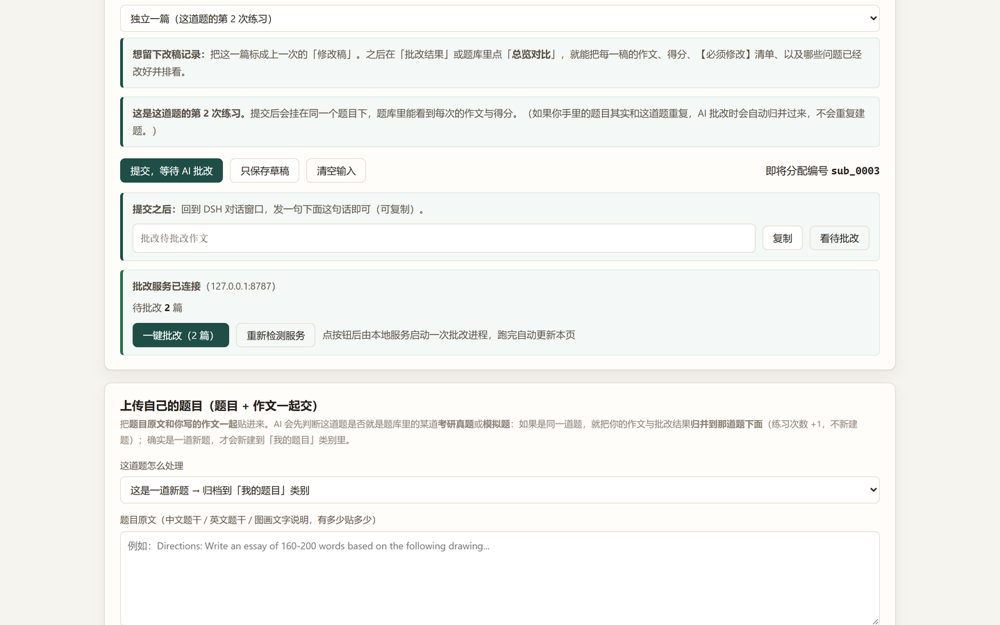
① ②start-helper.cmd 正在运行、且提交已同步。app\data\pending_submissions.json，AI 与批改服务都读这份文件，所以不会再出现「AI 说没有待批改作文」。
app\data\patches\ 里有对应补丁），
或者你还没提交。想重批同一篇：把补丁文件删掉再点一次（或直接对 AI 说「重批 sub_0003」）。
批改完成后，点顶部「批改结果」查看（图 7）。
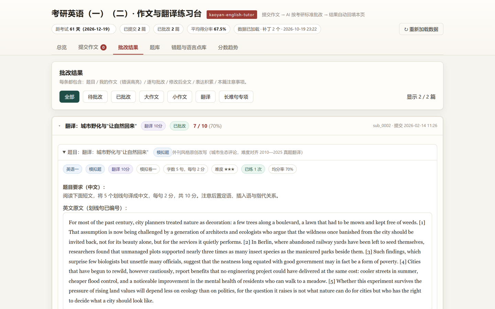
① ② ③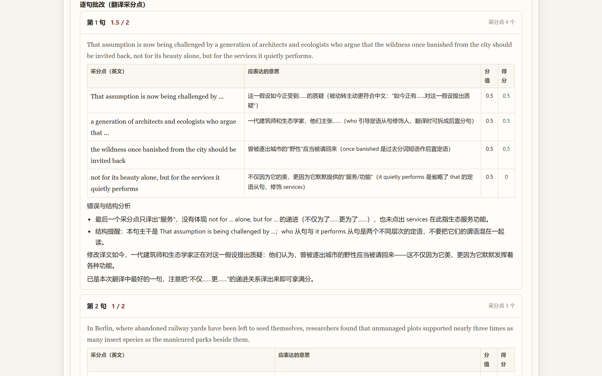
| 板块 | 你要做什么 |
|---|---|
| 1. 整体评价与评分 | 看档位 + 分数 + 一句话依据。分数只是参考，档位说明才是重点。 |
| 2. 逐句批改 | 优先处理【必须修改】：每条都会写「错在哪 → 为什么错（语法规则）→ 怎么改 → 同类自查」。 |
| 3. 修改后全文 | 朗读一遍，感受「同样的意思，怎么写得更好」；加粗处就是改动点。 |
| 4. 词汇升级 3—5 处 | 每处都给「没把握时的退路句」，用不熟就别用。 |
| 5. 语法升级 1—2 处 | 给出公式 + 为什么这里适合 + 写错的风险点。 |
| 6. 本篇注意事项 + 模板建议 | 3 条以内的可执行动作；需要模板时会给骨架与「去模板化」改法。 |
点顶部「错题与语言点库」。AI 每次标出的【必须修改】都会自动归类（主谓一致、时态、冠词、从句、搭配……），并累计出现次数。
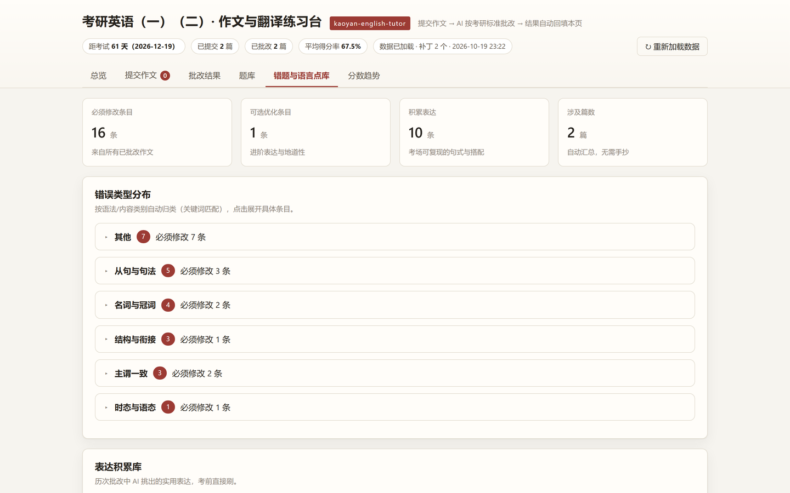
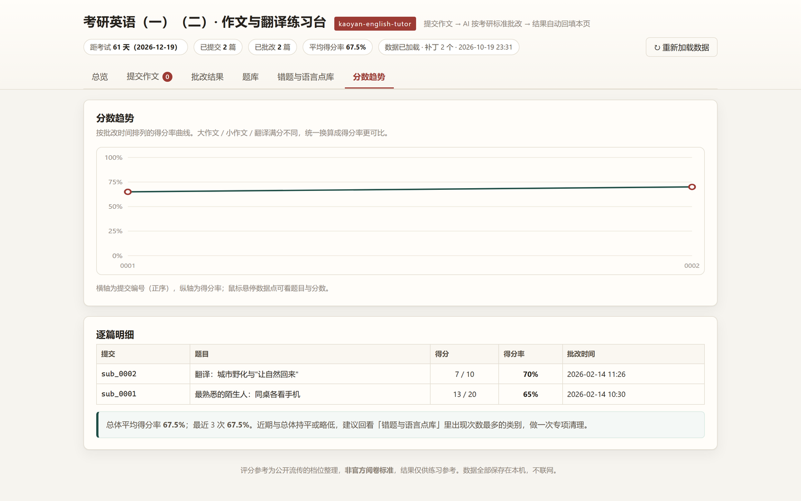
提交时选「是某一篇的修改稿」，之后在批改结果或题库里点「总览对比」，就能把每稿的作文、得分、【必须修改】清单并排看，并自动标出「上一稿的问题是否已解决」。
每年考研结束后（12 月底），回到「题库」页顶部的「一键更新题库」面板（图 11）。它会检查两个科目的年份覆盖，缺哪年补哪年。
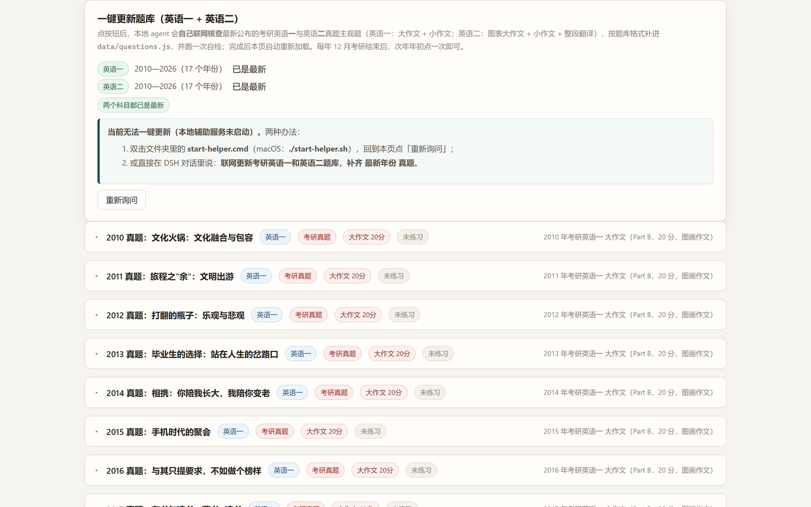
① ②start-helper.cmd 没开；按提示双击它，或直接在对话里说「联网更新题库」。start-helper.cmd（窗口保持开着）node app\tools\validate.js。
它会检查两科年份完整性、每道题的字段、英语二翻译是否有英文原文。
| 现象 | 原因与处理 |
|---|---|
| AI 说「没有待批改的作文」 | 提交只在浏览器本地。先双击 start-helper.cmd，回网页点一次「一键批改」（会自动同步成 app\data\pending_submissions.json）；或点「导出本机提交 JSON」另存为该文件；或把作文直接粘进对话。 |
双击 一键批改.cmd 报「找不到 node」 | 本机没装 Node.js。脚本会自动尝试 DSH 自带运行时；仍失败就装 Node.js 18+，或直接在对话里说「批改待批改作文」。 |
| 双击脚本满屏「不是内部或外部命令」 | 脚本行尾被改成 LF 了（常见于手工另存）。从 GitHub 重新下载即可，仓库已用 .gitattributes 强制 .cmd 用 CRLF。 |
| 题库显示 0 道题 | 多半是 questions.js 引用了不存在的图函数。跑 node app\tools\validate.js 看报错，或点「回退到更新前的备份」。 |
| 提交后看不到结果 | 确认 app\data\patches\ 下有 sub_XXXX.js（必须是 .js）；再点右上角「重新加载数据」。 |
| 网页按钮点不动 / 一直「正在检测」 | start-helper.cmd 的窗口被关了。重新双击它，再点「重新检测服务」。 |
| 顶栏提示「未能读取 data/state.js」 | index.html 被单独移走了。确保 app\ 整个目录一起移动。 |
| 清除缓存后提交没了 | 「清除本机草稿与图片缓存」会删掉全部本机提交。清之前先「导出本机提交 JSON」备份。 |
| 想换端口 | node app\tools\grade-helper.js --port 8899，同时改 app\index.html 里的 HELPER_URL。 |
| 分数和我预期差很多 | 评分是模拟评分（民间整理的官方档位口径），不是真实阅卷。看档位理由是否成立，比看分数有用。 |
node app\tools\validate.js --report（数据 + 页面渲染仿真），
再运行 node tools\check-repo.js（路径/命令/技能包结构）。两项都通过，说明这套工具是健康的。
| 数据 | 位置 | 要备份吗 |
|---|---|---|
| 你的提交（作文正文） | 浏览器 localStorage（kaoyan_subs_v1） | 要（导出 JSON） |
| 批改结果 | app\data\patches\sub_XXXX.js | 要 |
| 同步给 AI 的提交 | app\data\pending_submissions.json | 自动生成 |
| 手写照片 | app\data\uploads\ | 要 |
| 考试日期 / 称呼 | app\data\state.js 的 meta | 可选 |
| 题库 | app\data\questions.js（由生成器产出） | 随仓库 |
app\data\ 里就包含了补丁、照片、题库）。换电脑时把文件夹拷过去即可，全部使用相对路径。
| 命令（在项目根目录执行） | 作用 |
|---|---|
node install.js | 安装与自检（装技能到 DSH、检查 dsh 与题库） |
node app\tools\validate.js --report | 数据 + 页面渲染仿真全量自检 |
node tools\check-repo.js | 路径、命令、技能包结构检查 |
node tools\grade-once.js --update 2027 | 命令行方式更新题库（等价于点按钮） |
node tools\grade-once.js --task "只批改 sub_0003" | 只批某一篇 |
| 考试 / 题型 | 满分 | 档位 |
|---|---|---|
| 英语一 · 大作文 | 20 | 17-20 / 13-16 / 9-12 / 5-8 / 1-4 / 0 |
| 英语一 · 小作文 | 10 | 9-10 / 7-8 / 5-6 / 3-4 / 1-2 / 0 |
| 英语一 · 翻译（5 句） | 10 | 每句 2 分（扭曲原意 ≤0.5；错别字满三个扣 0.5） |
| 英语二 · 大作文 | 15 | 13-15 / 10-12 / 7-9 / 4-6 / 1-3 / 0 |
| 英语二 · 翻译（整段） | 15 | 四档：13-15 / 9-12 / 5-8 / 0-4 |
| 六级（CET-6）· 作文 | 15 | 14 / 11 / 8 / 5 / 2 分档（3 分一档，档内 ±1，不给半分） |
分档描述参照教育部教育考试院历年《考试大纲》的表述（经多方逐字一致转引），档内微调与扣分公式属阅卷口径，
官方未公布逐条细则；批改时会明确标注「模拟评分」。词汇/语法升级与模板库整合自公开的名师与机构方法论
（王江涛、朱伟、潘赟、石雷鹏、刘晓艳、唐迟、何凯文等），只吸收可执行的方法，不复制讲义。
详细依据见 skill\references\rubric_kaoyan.md、rubric_cet6.md、master_methods.md。